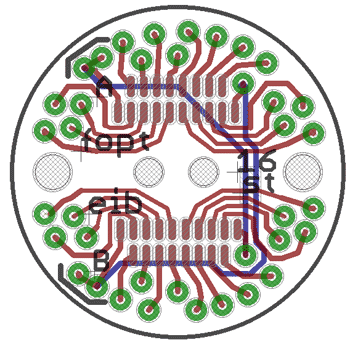
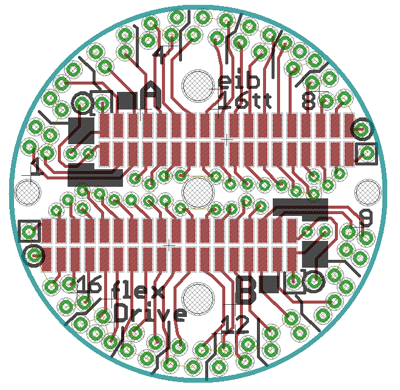

For microwire electrodes, the electrical connection between the electrode and the headstage is made through a printed circuit board that is attached to the top of the drive implant and provides a number of vias that accomodate the electrode wires. Usually, the connection is made by fixing the wire in the via with a gold pin (such as the pins made by Neuralynx). The flexDrive currently includes design files for EIBS with two standard 16 channel omnetics connectors and openings for two optical fiber ferrules (1.25mm OD).
The flexDrive is compatible with any circular EIB that is snaller than a diameter of around 16.5mm. The currrent designs are attached to the drive body with the help of two mounting holes (15mm center-to-center), but practically, attaching the EIB with just epoxy has been working very well.

We're in the process of testing a EIB design that accomodates 64 channels in the same
footprint, using two standard 32 channel omnetics connectors.